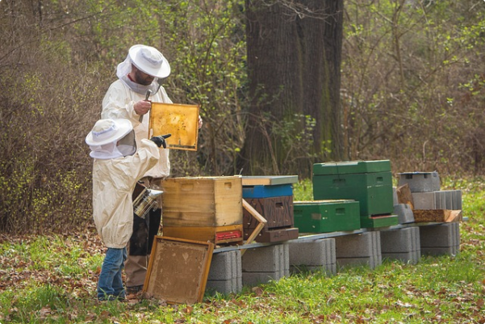

Racines Provençales
Depuis 1970, une passion familiale au cœur de Fleurs de Peau, en Provence. Dans cette région baignée de soleil, où la lavande embaume les champs, chaque fleur donne naissance à une douceur unique. La famille Ô Miel perpétue un savoir-faire apicole respectueux des abeilles et de la nature, au rythme des saisons provençales. Ce lien intime entre les fleurs de Provence et le miel se retrouve dans la pureté et la richesse de chaque récolte.

« Le miel Ô Miel est un vrai délice ! Sa saveur authentique et sa texture onctueuse reflètent parfaitement la richesse de la Provence. Je ne peux plus m’en passer ! »